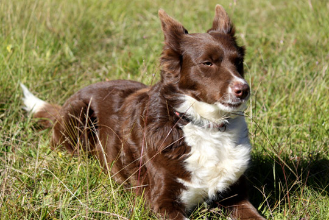

Welcome to Happy Herders!
Border collies are intense, loyal and very smart dogs that can range in size from under 20 to over 60 pounds--they are known and bred for their very strong herding instincts, put to good use by shepherds the world over. While they can live happily in apartments, border collies need "work"--things to do both mentally and physically, such as learning tricks and playing ball--and are not a good choice for people who want a dog they can leave alone for long periods.

Border collies will repay your investment of time and dedication by displaying amazing loyalty, and will astound you with their smarts. It is not a coincidence that when you learn of an incredible canine feat, it's very often a border collie as the featured hero. It doesn't hurt their popularity that they are among the most beautiful dogs in the world, either!
(We think this is all part of their plan for world domination, but we're not smart enough to understand their plan!)
Border collies are mostly "working dogs", with far looser restrictions on appearance than an AKC breed*, and therefore can display a large range of coats, coloring, size and temperaments. This generally means they have far fewer genetic problems than a "purebred" dog, and it's not difficult to find a border collie suited to you and your lifestyle.
Please note, though, that their intelligence, strong herding instincts and high energy levels make them potentially difficult companions for families with young children or for individuals unable to give them the attention and exercise they need.
- There are AKC border collies now, a move not without controversy. At Happy Herders we don't pay any attention to whether a dog is AKC registered or not, and much prefer the healthier approach a "working dog" breeder takes!